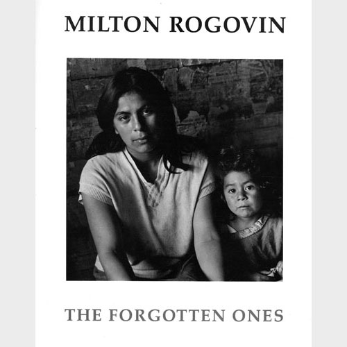

Photo Books & Collaborations
Books in Print
Click on any image to view a larger book cover.
From the Western Door to the Lower West Side
White Pine Press, 2009.
Native American poet Eric Gansworth weaves his poetry with Milton Rogovin's Native American series.
Milton Rogovin: The Lens and The Pen, Photography and Poems
Palisade Press 2009.
At age 89, Milton Rogovin selected a number of his special photographs, wanting to express something more about his images.
Milton Rogovin: The Making of a Social Documentary Photographer
University of Washington Press and Center for Creative Photography 2006.
Author Melanie Herzog includes photographs from each of Rogovin’s series, his politics and Anne’s critical role.
Milton Rogovin: The Mining Photographs
J. Paul Getty/Oxford University Press 2005.
Photographs from The Family of Miners series, including at-work and at-home photos from ten nations.
With Eyes and Soul: Images of Cuba
White Pine Press 2004.
Poetry from Cuban poet Nancy Mórejon are matched with Rogovin’s photographs of miners, laborers, youth dancers and more.
Milton Rogovin: The Forgotten Ones
Quantuck Lane Press 2003.
Photographs from the Storefront Church, Working People Yemeni and Lower West Side series. Included are interviews by Sound Portraits of the Lower West Side Quartets.
The Bonds Between Us
White Pine Press 2001.
This book draws from Rogovin’s major photographic series and encompasses five decades of portraits of families from around the world.
Books Out of Print
Milton Rogovin: The Forgotten Ones
University of Washington Press and Albright-Knox Art Gallery 1985.
First book to publish photographs from early Milton Rogovin photographic series.
Portraits In Steel
Cornell University Press 1993.
Prof. Michael Frisch conducts extensive interviews with steel and electrical workers in Buffalo and Lackawanna, NY, with photographs by Milton Rogovin.
Windows That Open Inward
White Pine Press 1999. A 1967 collaboration between acclaimed Chilean poet Pablo Neruda and photographer Milton Rogovin.
Nada Queda Atrás
Ediciones Museo de Arte Moderno Chiloé 2008.
Prof. and poet Carlos Trujillo writes about forty photographs taken by Milton Rogovin in 1967. The photo series was done on the island of Chiloé, Chile, where Trujillo grew up.